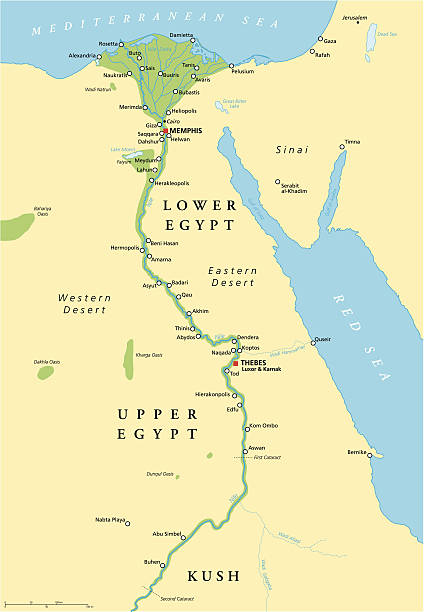
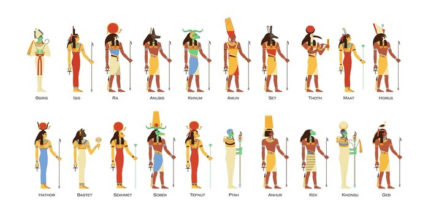
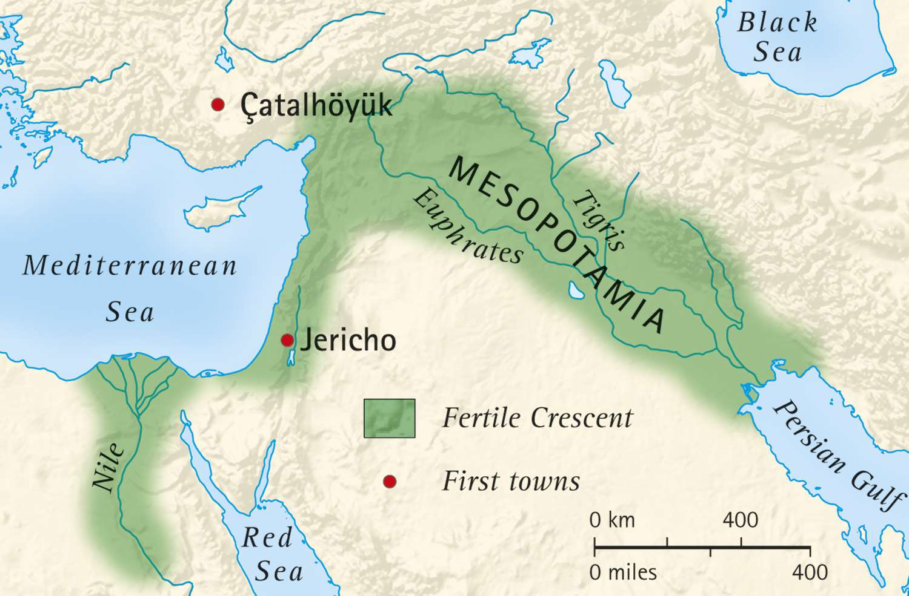
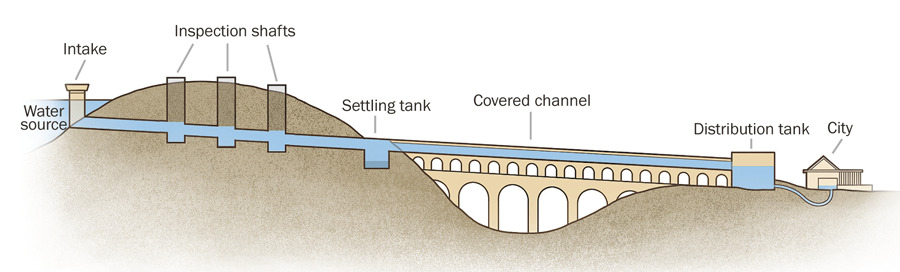

The Dawn of History
Old World Civilizations

Ancient Egypt
Time: c. 3100 BCE – 30 BCE
Location: Nile River Valley (Northeast Africa)
Capital City: Memphis, Thebes, Akhetaten (varied by period)
Key Figures: Narmer, Khufu, Hatshepsut, Tutankhamun, Ramesses II
Known For: Pyramids, Mummification, Hieroglyphics, Solar Calendar, Papyrus.
I. Geography: The Gift of the Nile
The civilization's existence was inextricably linked to the Nile River, divided into **Upper Egypt (South)** (the narrow river valley) and **Lower Egypt (North)** (the fertile delta). The annual **Inundation (flooding)**, which occurred from July to October, deposited nutrient-rich black silt (**kemet**), allowing for highly successful agriculture (wheat and barley) which supported a vast population. The surrounding arid desert (**deshret**) provided natural isolation and defense.
II. Chronological Overview Highlights
- **Old Kingdom (c. 2686–2181 BCE):** The "Age of the Pyramids," marked by strong centralized government and the peak of monumental construction (Pyramids of Giza).
- **Middle Kingdom (c. 2055–1650 BCE):** A cultural high point after reunification, featuring flourishing literature, art, and irrigation systems.
- **New Kingdom (c. 1550–1070 BCE):** The "Golden Age" of imperial expansion, featuring famous Pharaohs like Hatshepsut, Thutmose III, and Ramesses II.
- **Ptolemaic Period (332–30 BCE):** Established after Alexander the Great's conquest and ruled by a Greek dynasty, ending with the death of Cleopatra VII and the Roman takeover.
III. Society, Governance, and Ma'at
The Pharaoh was not just a king but a living god, seen as the intermediary between the gods and the people. His primary duty was to uphold **Ma'at**, the divine concept of cosmic order, truth, and balance. This absolute power was supported by a vast bureaucracy led by the **Vizier**. Society was rigidly structured, with **Scribes** (highly respected and educated) and **Peasants (Farmers)** (the largest class, essential for state labor) forming the core workforce.
IV. Religion and the Afterlife
Egyptian religion was polytheistic and deeply interwoven with the pursuit of eternal life. Key deities include **Ra** (Sun/Creator), **Osiris** (Underworld), **Isis** (Magic), and **Horus** (God of the Pharaoh). The belief necessitated **mummification** to preserve the body, allowing the spiritual components (**Ka** - life force, and **Ba** - personality/soul) to reunite. The deceased faced the **Weighing of the Heart** ceremony against the Feather of Ma'at to determine their fate.
V. Major Achievements and Legacy
- **Architecture:** Masterful engineering seen in the **Pyramids** (tombs) and colossal **Temples** (Karnak, Abu Simbel), along with the iconic **Sphinx**. [Image of Great Pyramid of Giza]
- **Writing:** Developed **Hieroglyphs** (sacred inscriptions), which evolved into the cursive **Hieratic** and later **Demotic** scripts used by the Scribes.
- **Science:** Practical mastery of **Mathematics** (geometry for surveying and construction), advanced **Medicine** (detailed medical texts), and the accurate 365-day **Solar Calendar**.
Key Figures & Contributions
- **Narmer:** The Pharaoh traditionally credited with uniting Upper and Lower Egypt (c. 3100 BCE), marking the beginning of the Dynastic period.
- **Khufu:** Pharaoh of the Fourth Dynasty who commissioned the Great Pyramid of Giza, the largest of the Egyptian pyramids.
- **Hatshepsut:** One of the few female Pharaohs, renowned for her peaceful reign, prolific construction projects, and trade expeditions.
- **Ramesses II:** Known as Ramesses the Great, famous for his long reign (66 years), military campaigns, and vast building projects like the temples at Abu Simbel.
Mesopotamia
Time: c. 4000 BCE – 539 BCE
Location: Between Tigris & Euphrates Rivers (Modern Iraq)
Capital City: Ur, Babylon, Nineveh (varied by dominant state)
Key Figures: Sargon of Akkad, Hammurabi, Nebuchadnezzar II
Known For: Cuneiform, The Wheel, Hammurabi's Code, Ziggurats, Base-60 Mathematics.
I. The Cradle of Civilization
Mesopotamia, meaning "land between the rivers," refers to the region between the Tigris and Euphrates. It was a region of great agricultural fertility (the Fertile Crescent) but lacked natural defenses, leading to a constant cycle of cultural succession and warfare among different groups (Sumerians, Akkadians, Babylonians, Assyrians). This environment fostered innovation in city-building and military strategy.
II. Political Structure and Law
The political landscape was initially dominated by independent **Sumerian city-states** (like Ur, Uruk, Kish), centered around temple complexes (**Ziggurats**). Power later centralized under empires. The most famous codified legal system was **Hammurabi's Code** (Babylonian, c. 1754 BCE), which established specific punishments based on social rank ("An eye for an eye"). The Ziggurats served as religious and administrative hubs, symbolizing the connection between heaven and earth.
III. Technological and Cultural Innovations
- **Writing:** Developed **Cuneiform**, the world's earliest known writing system, consisting of wedge-shaped marks pressed into clay tablets, essential for record-keeping and literature (e.g., *The Epic of Gilgamesh*).
- **Mathematics/Astronomy:** Used a **sexagesimal (base-60)** number system, which influences modern timekeeping (60 seconds, 60 minutes) and geometry (360 degrees). They were skilled astronomers, creating accurate calendars and predicting eclipses.
- **Inventions:** Credited with the invention of the **wheel** (for transport and pottery), irrigation systems, and standardized brick-making.
Key Figures & Contributions
- **Sargon of Akkad:** Founder of the Akkadian Empire, the first empire in recorded history, uniting Sumerian city-states under a single ruler (c. 2334 BCE).
- **Hammurabi:** King of Babylon famous for enacting the Code of Hammurabi, one of the earliest and most complete written legal codes.
- **Nebuchadnezzar II:** King of the Neo-Babylonian Empire who ordered the construction of the Hanging Gardens of Babylon (one of the Seven Wonders) and conquered Jerusalem.

Ancient Greece
Time: c. 800 BCE – 146 BCE (Classical Age c. 510–323 BCE)
Location: Balkan Peninsula & Aegean Sea
Capital City: Athens (Prominent City-State)
Key Figures: Socrates, Plato, Aristotle, Pericles, Alexander the Great
Known For: Democracy, Philosophy, Geometry, Olympics, Classical Architecture.
I. Political Structure: City-States and Democracy
Ancient Greece was geographically fragmented, leading to the development of independent city-states (*poleis*). **Athens** pioneered **direct democracy** (where eligible citizens voted directly on laws), while **Sparta** was a highly disciplined, military oligarchy. The conflicts between these city-states (most notably the Peloponnesian War) defined the Classical Age.
II. The Philosophical Revolution
Greek philosophy moved beyond mythological explanations to seek rational understanding of the world. The triumvirate of **Socrates** (known for his question-based method), **Plato** (founder of the Academy, focusing on ideal forms), and **Aristotle** (pioneer of logic, empirical study, and scientific classification) laid the intellectual bedrock of Western thought and modern scientific method.
III. Legacy in Arts, Science, and Empire
- **Architecture:** Defined by the three orders (**Doric, Ionic, Corinthian**). The **Parthenon** in Athens is the iconic example of Doric architecture, built during the peak of Pericles' Golden Age.
- **Science:** Significant advancements in **Geometry** (Euclid) and **Physics** (Archimedes). They created the foundations of modern Western medicine (Hippocrates).
- **Hellenism:** Following the conquests of **Alexander the Great**, Greek culture, language, and thought spread across Egypt, the Near East, and India, creating the diverse and cosmopolitan Hellenistic era.
Key Figures & Contributions
- **Socrates:** Classical Athenian philosopher credited as one of the founders of Western philosophy, known for the Socratic method.
- **Plato:** Student of Socrates and founder of the Academy in Athens, known for the *Theory of Forms* and writing *The Republic*.
- **Aristotle:** Student of Plato, tutor to Alexander the Great, and a key figure in logic, biology, physics, and ethics.
- **Alexander the Great:** Macedonian King who created one of the largest empires in the ancient world, stretching Hellenic culture across the Near East.

Roman Empire
Time: c. 753 BCE – 476 CE (Western Empire)
Location: Italian Peninsula & Mediterranean World
Capital City: Rome, Constantinople (later Eastern Empire)
Key Figures: Julius Caesar, Augustus, Trajan, Constantine the Great
Known For: Legions, Concrete, Aqueducts, Roman Law, Latin, Extensive Road Network.
I. Political Evolution and Military Might
Rome evolved from a Monarchy (753 BCE) to a Republic (509 BCE), characterized by elected officials (Consuls, Senate) and complex checks and balances, and finally into an Empire (27 BCE) under the leadership of **Augustus**. The foundation of its expansion was the **Roman Legions**, a highly organized and disciplined fighting force capable of integrating conquered peoples. The period of the *Pax Romana* (Roman Peace, 27 BCE – 180 CE) marked the empire's greatest stability and prosperity.
II. Engineering and Infrastructure
Roman engineers were masters of civil construction. They perfected the use of **concrete** and the **arch**, allowing them to build immense structures like the **Colosseum** and the **Pantheon**. Their network of **aqueducts** brought fresh water into cities, and their extensive **road system** (connecting over 50,000 miles of territory) facilitated rapid communication, trade, and military movement.
III. Law, Language, and Decline
- **Roman Law:** The basis of jurisprudence for many Western nations, introducing concepts like natural law, civil law, and the presumption of innocence.
- **Latin:** The official language, which evolved into the Romance languages (French, Spanish, Italian, etc.) and deeply influenced English vocabulary.
- **Decline:** The Western Roman Empire collapsed in 476 CE due to internal factors (economic decline, political corruption, over-extension) and external pressure from Germanic tribes, while the Eastern Roman Empire (Byzantium) survived for another thousand years.
Key Figures & Contributions
- **Julius Caesar:** Roman General and statesman whose campaigns led to the conquest of Gaul and whose dictatorship ultimately led to the fall of the Republic.
- **Augustus:** Founder of the Roman Principate and considered the first Roman Emperor, initiating the *Pax Romana* (Roman Peace).
- **Trajan:** Emperor under whom the Roman Empire reached its greatest territorial extent (117 CE).
- **Constantine the Great:** The first Roman Emperor to convert to Christianity, who moved the capital to Byzantium (Constantinople).

Indus Valley
Time: c. 3300 BCE – 1300 BCE (Mature Period: 2600–1900 BCE)
Location: Indus River Basin (Modern Pakistan & Northwest India)
Capital City: Mohenjo-daro, Harappa (major centers)
Key Figures: Unknown (Non-monumental leadership)
Known For: Urban Planning (Grids), Drainage Systems, Standardized Weights, Undeciphered Script.
I. Unmatched Urban Planning
The Indus Valley Civilization (IVC), or Harappan Civilization, stretched over a million square kilometers, making it larger than contemporary Egypt or Mesopotamia. Its defining characteristic was its remarkable urban sophistication. Major cities like **Mohenjo-daro** and **Harappa** were built on planned grid systems using standardized, fired bricks. They featured a citadel (raised area) and a lower town.
II. Engineering and Governance
The IVC cities had unparalleled hygiene infrastructure: every house had a bathroom, and private homes connected to an extensive underground **drainage system**. The presence of standardized weights and measures across the region indicates a powerful, centralized economic or administrative control, though this control was non-monumental, as large palaces or warrior depictions are conspicuously absent. They were prolific traders, with seals found as far away as Mesopotamia.
III. Script and Decline
- **Undeciphered Script:** The Harappan script, found mainly on square steatite seals, remains **undeciphered**. This means much of their political, social, and religious life is inferred, not read.
- **Decline:** The civilization began to decline around 1900 BCE. The leading theories for the de-urbanization involve environmental changes, such as shifts in the course of the Indus River and periods of intense drought, which destabilized the agricultural base.
Key Figures & Contributions
- **Unknown:** Due to the undeciphered script and a focus on collective planning rather than individual rule, no specific rulers or key figures are definitively known. The structure suggests decentralized or perhaps theocratic leadership.
Ancient China
Time: c. 1600 BCE – 256 BCE (Dynastic period begins)
Location: Yellow River Valley
Capital City: Anyang, Luoyang, Chang'an
Key Figures: Qin Shi Huang, Confucius, Laozi
Known For: Mandate of Heaven, Oracle Bones, Bronze Casting, Silk Production, Great Wall construction.
I. Dynastic Rule and Political Ideology
Ancient China's history is defined by its long-term imperial structure, beginning with the Shang and Zhou dynasties. The fundamental political principle was the **Mandate of Heaven** (*Tianming*), which held that the emperor had divine approval to rule, but only if he governed justly. Loss of the Mandate was evidenced by natural disasters or successful rebellions, justifying a change in dynasty (the Dynastic Cycle). The Zhou period gave rise to the feudal system (*fengjian*).
II. Philosophical Foundations
The chaotic Warring States Period (c. 475–221 BCE) led to the "Hundred Schools of Thought." **Confucianism** emphasized ethical conduct, social harmony, and respect for elders (*Filial Piety*), becoming the basis for imperial bureaucracy. **Taoism** (Daoism) advocated living in harmony with the natural flow of the universe (*Tao*). **Legalism** (promoted by the Qin Dynasty) stressed strict laws and harsh punishments to maintain order.
III. Technological and Unification Achievements
- **Writing and Record:** Early writing is found on **Oracle Bones** from the Shang Dynasty, used for divination. This script is the direct ancestor of modern Chinese characters.
- **Qin Unification:** **Qin Shi Huang** (the first emperor) unified China in 221 BCE, standardizing currency, weights, measures, and the axle width of carts. He began connecting existing fortifications into what would become the **Great Wall**. [Image of Qin Shi Huang's Terracotta Army]
- **Technology:** Known for mastering complex **bronze casting** and, later, the invention of silk, paper, and gunpowder.
Key Figures & Contributions
- **Qin Shi Huang:** The founder of the Qin Dynasty and the first emperor of a unified China (221 BCE), known for standardizing systems and connecting the Great Wall.
- **Confucius:** Highly influential philosopher whose teachings (Confucianism) emphasize morality, proper social relationships, and justice.
- **Laozi:** Semi-legendary figure credited with writing the *Tao Te Ching* and founding philosophical Taoism, emphasizing living in harmony with the *Dao* (the Way).

Persian Empire
Time: c. 550 BCE – 330 BCE (Achaemenid Empire)
Location: Iran & Three Continents (largest empire of its time)
Capital City: Persepolis, Susa, Ecbatana
Key Figures: Cyrus the Great, Darius I, Xerxes I
Known For: Royal Road, Satrapies (Provinces), Coinage, Zoroastrianism, Tolerance.
I. The First World Empire
The Achaemenid (Persian) Empire was established by **Cyrus the Great** and became the largest empire the world had yet seen, stretching from the Balkans to the Indus Valley. What set the Persians apart was their method of rule: instead of brutal subjugation, Cyrus implemented a policy of remarkable **tolerance**, allowing conquered peoples to retain their religions and customs (e.g., freeing the Jews from Babylonian captivity).
II. Advanced Administration and Infrastructure
Darius I organized the vast territory into twenty provinces called **satrapies**, each governed by a local official (*satrap*) but overseen by royal officials to prevent rebellion. This vast administrative system was held together by the **Royal Road**, a paved network extending over 1,600 miles, which allowed for rapid communication via the *chapar* (postal) service. Darius also introduced a standardized coinage system, greatly simplifying trade.
III. Religion and Culture
- **Zoroastrianism:** The primary state religion, founded by the prophet Zoroaster. It is an early monotheistic/dualistic faith emphasizing the choice between the benevolent god Ahura Mazda (good) and Angra Mainyu (evil). It influenced Judaism, Christianity, and Islam.
- **Architecture:** The ceremonial capital of **Persepolis** showcased unique Persian architectural features, blending Babylonian, Egyptian, and Greek styles, marked by grand staircases and massive carved columns.
Key Figures & Contributions
- **Cyrus the Great:** Founder of the Achaemenid Empire, famous for his policy of religious and cultural tolerance towards his conquered subjects.
- **Darius I:** Expanded the empire to its peak, established the Satrapy administrative system, standardized currency, and built the Royal Road.
- **Xerxes I:** Son of Darius I, known primarily for his massive, though ultimately unsuccessful, invasion of Greece.
New World Civilizations

Maya Civilization
Time: c. 2000 BCE – 1500 CE (Classic Period c. 250–900 CE)
Location: Yucatán Peninsula & Central America
Capital City: Tikal, Chichen Itza, Copán (Independent City-States)
Key Figures: K'inich Janaab' Pakal (Pacal the Great)
Known For: Concept of Zero, Highly Accurate Calendars, Hieroglyphs, Step Pyramids, Astronomy.
I. Decentralized Political Landscape
The Maya were not a unified empire but a collection of independent city-states, each ruled by an *ajaw* (lord). Despite political fragmentation and frequent warfare (often ritualistic), they shared a common culture, religion, and astronomical system. Their civilization was sustained by intensive agriculture in a dense tropical environment.
II. Astronomical and Mathematical Genius
The Maya developed one of the most sophisticated intellectual traditions in the pre-Columbian world. They independently invented the concept of **zero** in their base-20 (vigesimal) numbering system. This, combined with meticulous observation of the stars, allowed them to create multiple, interlocking calendars, including the 260-day Sacred Round and the 365-day Solar Calendar, with such accuracy that they could predict celestial events hundreds of years in advance. [Image of Maya calendar systems]
III. Culture and Collapse
- **Writing:** Developed the only fully developed, complex phonetic-logographic writing system in the Americas, recorded on stone monuments (*stelae*) and fragile bark-paper books (*codices*).
- **Architecture:** Built massive ceremonial centers dominated by elaborately decorated stepped stone pyramids (e.g., Tikal, Chichen Itza).
- **Classic Collapse:** Between 800 and 1000 CE, most of the southern Maya centers were abruptly abandoned due to a confluence of factors, likely including long-term drought, environmental pressure from overpopulation, and political warfare.
Key Figures & Contributions
- **K'inich Janaab' Pakal (Pacal the Great):** The *ajaw* (ruler) of the powerful Maya city-state of Palenque who presided over its golden age of construction and intellectual achievement in the 7th century CE.

Inca Empire
Time: c. 1438 – 1533 CE
Location: Andean Region (Peru, Ecuador, Bolivia, Chile, Argentina)
Capital City: Cusco
Key Figures: Pachacuti, Túpac Inca Yupanqui, Atahualpa
Known For: Machu Picchu, Extensive Road Network, Quipu (Record Keeping), Master Stonework.
I. The Empire of the Andes (*Tawantinsuyu*)
The Inca Empire, known as *Tawantinsuyu* ("The Four Quarters"), expanded rapidly in the 15th century, becoming the largest empire in the Americas. Their vast territory, ruled from the capital **Cusco**, spanned deserts, coasts, and the high Andes mountains. The **Sapa Inca** (the sole ruler) was considered the son of the Sun god Inti, giving his rule a divine mandate.
II. Administration Without Writing
The Inca achieved centralized management without a conventional writing system. They relied on the **Quipu**, a system of knotted, colored strings used by specialists (*quipucamayocs*) to record complex decimal data on census, taxes, and state resources. Their economy was based on collective labor known as the *mita* system, a form of mandatory public service used for massive state projects like road building and farming terraces.
III. Engineering and Architecture
- **Road System (Qhapaq Ñan):** The Incas built the **Great Inca Road**, an estimated 25,000-mile network of trails traversing the entire empire, linked by runners (*chasquis*) who carried messages.
- **Stonework:** Their masterful dry-stone masonry, visible at sites like **Machu Picchu** and Cusco's core temples, involved cutting and fitting massive stones so precisely that mortar was unnecessary, creating earthquake-resistant structures.
- **Agriculture:** Developed sophisticated high-altitude agriculture using extensive terrace farming and advanced irrigation techniques to manage the mountainous terrain.
Key Figures & Contributions
- **Pachacuti:** The ninth *Sapa Inca* (Great Inca), credited with transforming the small Kingdom of Cusco into the vast Inca Empire (*Tawantinsuyu*) through military conquest and centralized reorganization.
- **Túpac Inca Yupanqui:** Son of Pachacuti, who continued the expansion, conquering much of modern-day Ecuador and northern Chile.
- **Atahualpa:** The last true Inca Emperor, whose victory in a devastating civil war against his brother Huáscar coincided with the arrival of Spanish conquistadors, leading to the empire's rapid demise.